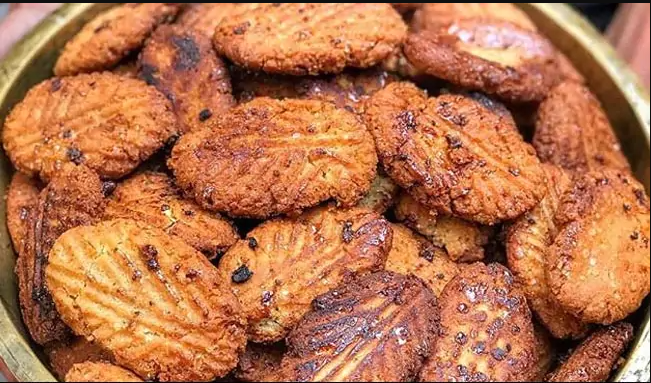

Thekua Recipe

Description
Thekua is a traditional deep-fried sweet snack from Bihar made from whole wheat flour (aata).
Thekua is offered as prasad during the festival of Chhath Puja celebrated in Bihar.
Ingredients
- Whole wheat flour (aata)
- Ghee
- Jaggery
- Water
- Raisins
- Cashew Nuts
Steps
- Heat jaggery with water to form a syrup.
- Add melted ghee, cashew nuts and raisins to the whole wheat flour.
- Mix them thoroughly for five minutes.
- Add the jaggery syrup to the mixture and mix it into a dough with no lumps.
- Add ghee to a pan and let it heat
- Use the dough to prepare small round balls and press them to make them flat
- Finally, drop them into the ghee pan and fry them till they become reddish brown in color.
- Enjoy the delicious thekuas.